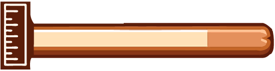
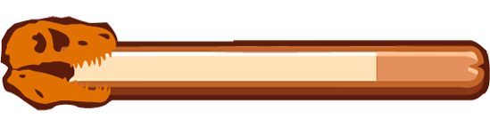
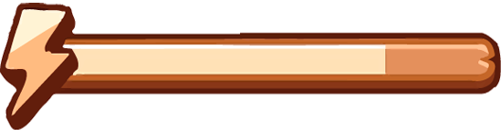
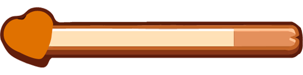
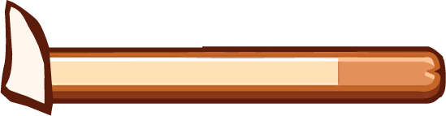

El Tyrannosaurus Rex podía medir hasta 12 metros de largo y 4 metros de altura.
12 m de largo, 4 m de altura
La mordida del T-Rex era una de las más poderosas de cualquier animal terrestre, con una fuerza de hasta 35,000 newtons.
35,000 N
A pesar de su tamaño, se estima que el T-Rex podía correr a velocidades de hasta 20 km/h.
20 km/h
Los científicos creen que el T-Rex podía vivir hasta 30 años.
30 años
El T-Rex tenía aproximadamente 60 dientes, algunos de hasta 30 cm de largo.
60 dientes, 30 cm de largo
El video presenta el imponente esqueleto de un T-Rex, una de las criaturas más temidas del período Cretácico. Ubicado en el corazón del museo, este fósil es una atracción central que cautiva a visitantes de todas las edades. El video muestra en detalle los enormes dientes afilados y las poderosas mandíbulas del T-Rex, así como su estructura ósea masiva que revela su formidable tamaño. Con una iluminación estratégica que resalta cada hueso, el esqueleto parece cobrar vida. Este video no solo es educativo, sino que también invita a los espectadores a imaginar cómo habría sido coexistir con estos gigantes prehistóricos.